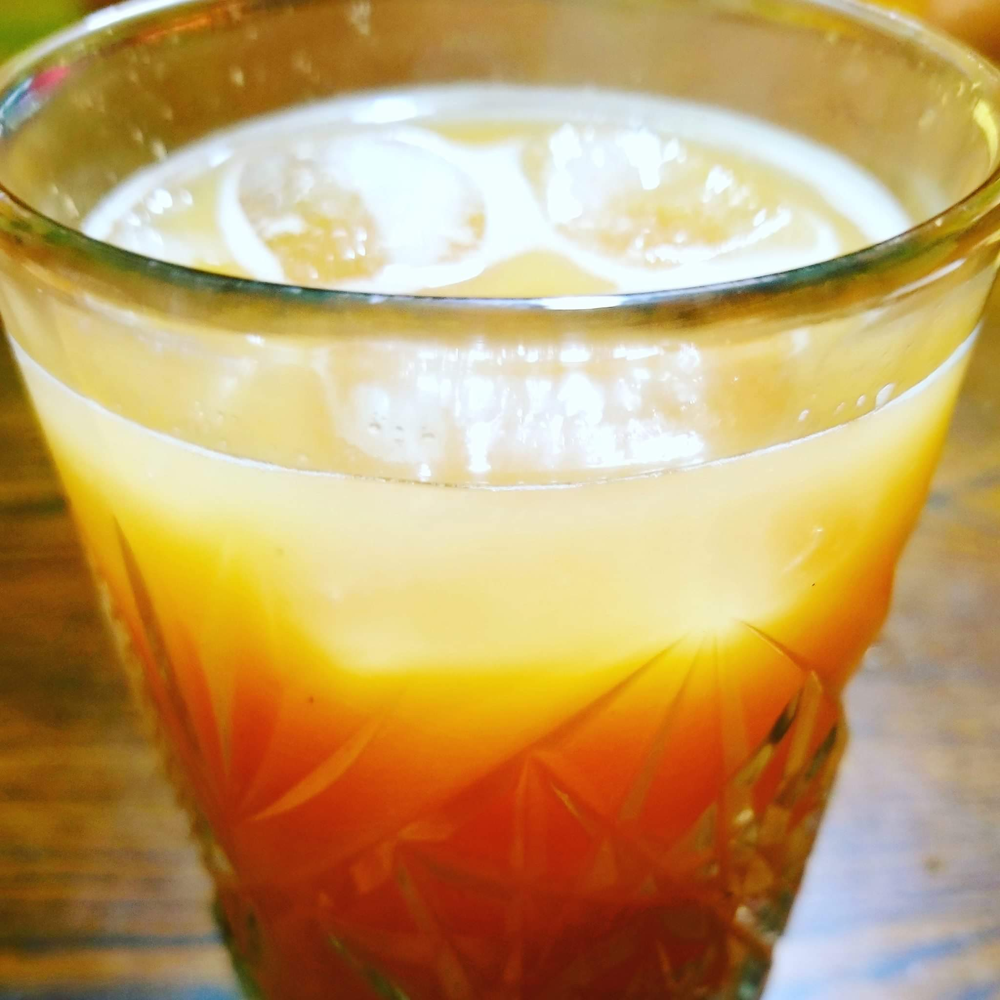

POG Juice

Description
If you've eaten breakfast at Walt Disney World or visited Hawaii, then you've probably had P.O.G juice.
It's an amazingly refreshing blend of passion fruit juice, orange juice, and guava nectar. Enjoy!
Ingredients
- 6 cups passion fruit juice (such as Welch's)
- cups guava nectar (such as Goya)
- 3 cups fresh squeezed orange juice
Steps
- Combine passion fruit juice, guava nectar, and orange juice in a large glass pitcher.
- Stir well.
- Chill until ready to serve.